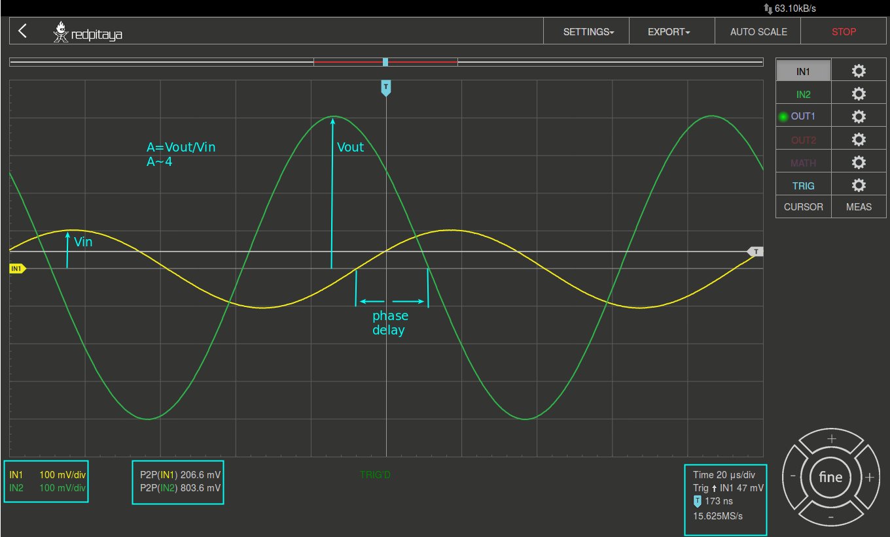
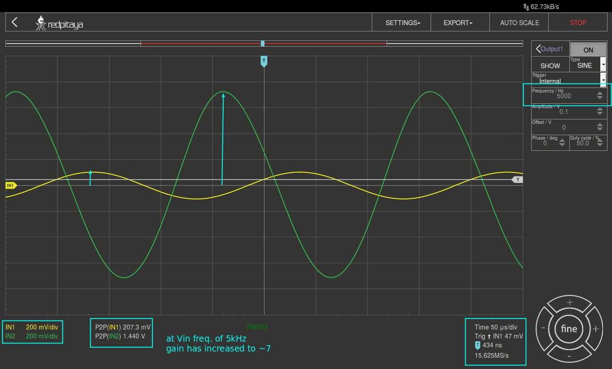

27. Test_MOS-Transistor-Source-Verstärker¶
27.1. Zielsetzung¶
Der Zweck dieses Experiments ist es, die Common - Source - Verstärkerkonfiguration des MOS-Transistors zu untersuchen.
27.2. Anmerkungen¶
In diesen Tutorials verwenden wir die Terminologie aus dem Benutzerhandbuch, wenn es um die Verbindungen zur Red Pitaya STEMlab Board Hardware geht. Die Oszilloskop- und Signalgeneratoranwendung wird zum Erzeugen und Beobachten von Signalen auf der Schaltung verwendet. Die Erweiterungsstecker-Pins für die Spannungsversorgung +5V, -3,3V und +3,3V sind in der Dokumentation dargestellt.
27.3. Hintergrund¶
Die in Abbildung 1 dargestellte Konfiguration zeigt den NMOS-Transistor, der als Common-Source-Verstärker verwendet wird. Um die Transistor - \(V_{GS}\) - Spannung für den selbstvorbelasteten DC-Betriebspunkt einzustellen, wird der Spannungsteiler \(\fraq{R_1}{R_2}\) gewählt. Der Widerstand \(R_G\) dient zur Einstellung des Gewinns des Verstärkers. Der Wert des \(R_G\) - Widerstandes in Kombination mit den Widerständen \(R_1\) und \(R_2\) beeinflusst, wie viel \(V_{in}\) zur \(V_{GS}\) - Spannung addiert wird und somit direkt der Gewinn des Verstärkers eingestellt wird. Der Ausgangslastwiderstand \(R_L\) ist so gewählt, dass für den gewünschten Nenn-Drainstrom \(I_D\) die am \(V_{DS}\) auftretende Spannung etwa ein Drittel der \(V_{DD}\) - Versorgungsspannung beträgt. Der Widerstand \(R_S\) wird verwendet, um die Quellendegeneration hinzuzufügen, um den DC-Betriebspunkt zu stabilisieren. Der beste Ansatz für die Auswahl von \(R_L\) und \(R_S\) besteht darin, Spannungsabfälle über \(M_1\), \(R_L\) und \(R_S\) zu ermöglichen, die dem 1/3 des \(V_{DD}\) entsprechen (bei DC-Betriebszustand). Daher ist \(R_S\) = \(R_L\). Das Hinzufügen des Quell-Degenerationswiderstandes hat die Stabilität des DC-Betriebspunktes bei gleichzeitig reduziertem Gewinn verbessert. Eine höhere Verstärkung für Wechselstromsignale, kann bis zu einem gewissen Grad wiederhergestellt werden, indem der Kondensator \(C_S\) über den Degenerationswiderstand \(R_S\) hinzugefügt wird, wodurch der Wert „\(R_S\)“ für Wechselstromsignale nahe Null gesetzt wird. Der Kondensator \(C_2\) wird hinzugefügt, um die DC-Komponente des Ausgangssignals zu blockieren. Aufgrund der hohen Eingangsimpedanz kann die Kapazität \(C_1\) im Bereich von \(<\mu F\) ausgewählt werden.
Bemerkung
Einer der Hauptvorteile des MOS Common-Source-Verstärkers gegenüber dem BJT Common-Emitter-Verstärker ist eine extrem hohe Eingangsimpedanz bei gleichzeitig rauscharmem Ausgang, was ihn ideal für den Einsatz in Verstärkerschaltungen mit sehr kleinen Eingangssignalen macht. Die Eingangsimpedanz ist faktisch nur von der Eingangskapazität \(C_{iss}\), den Widerständen \(R_1\) und \(R_2\), die im Bereich von \(M\Omega\) ausgewählt werden können, abhängig.

Abb. 27.1 Common-Source-Verstärker-Konfiguration
Warnung
Die Berechnung und das Design eines Common Source Verstärkers ist nicht einfach. Das Design eines herkömmlichen Source-Verstärkers hängt weitgehend vom gewählten Transistor (dessen Parametern), dem gewünschten Frequenzbereich und der Endverstärkung ab. In der Praxis beeinflussen viele Faktoren wie die Eingangskapazität das Schaltungsverhalten, während diese Faktoren aus den verfügbaren Tutorials und der Theorie weitgehend ausgeschlossen sind. Für ein tieferes Verständnis der gängigen Quellverstärker werden die folgenden Links vorgeschlagen:
Durch Vereinfachungen, die im Folgenden aufgeführt sind, kann die ungefähre Verstärkung für einen Common-Source-Verstärker (:numref:`27_fig_01`), wie in Gleichung (2) dargestellt, beschrieben werden.
- Vernachlässigung des Spannungsabfalls am \(C_1\) - Kondensator. Wir können den Spannungsabfall am Kondensator \(C_1\) vernachlässigen, wenn \(1/(2\pifC_1) <<< R_G\) .
- Vernachlässigung der \(C_S\) - Impedanz. Wenn der \(C_S\) - Wert im Bereich \(C_S >> 10\mu F\) ausgewählt wird, ist seine Impedanz vernachlässigbar und geht für alle AC-Signale effektiv auf \(0\,\Omega\).
- Drain-Ausgangswiderstand geht im Falle von \(\lambda = 0\) gegen Unendlich \(r_o \to \infty\), und kann daher in Gleichung (1) vernachlässigt werden.
Bemerkung
Transkonduktanz \(g_m\) ist die Änderung des Drainstroms dividiert durch die geringe Änderung der Gate-/Source-Spannung bei konstanter Drain-/Source-Spannung. Typische Werte von \(g_m\) für einen Kleinsignal-Feldeffekttransistor sind \(1\) bis \(30\,\milli S\) (Millisiemens).
mit der Vernachlässigung des \(r_o\) (\(r_o \to \infty\)), erhalten wir:
wobei \(Z_{iss}\) die Gate-Impedanz aufgrund der Eingangskapazität \(C_{iss}\) (Common-Source-Schaltung Eingangskapazität) des MOS-Transistors ist.
Wenn wir annehmen, dass die Transistorparameter \(C_{iss}\) und \(g_m\) konstante Werte aus Gl. 27.2 sind, folgt daraus, dass der Gewinn des Common-Source-Verstärkers abhängig von den peripheren Widerständen \(R_1, R_2, R_G, R_L, R_S\) und der Eingangssignalfrequenz \(f\).
Wenn \(C_{iss}\) auf Null geht, dann hängt die Verstärkung nur von den peripheren Widerständen \(R_1, R_2, R_G, R_L, R_S\) und Transistor-Transkonduktanz \(g_m\) ab.
Bemerkung
In der Praxis ist die Eingangskapazität der Common-Source-Schaltung \(C_{iss}\) nicht Null und kann von der Gatespannung und dem Verstärkungsfaktor abhängig sein. Hier werden wir annehmen, dass der \(C_{iss}\) ein konstanter Wert ist. \(C_{iss}\) und \(g_m\) Werte sind üblicherweise im Datenblatt des Transistors angegeben.
27.4. Materialien¶
- Red Pitaya STEMlab
- 4x \(1\,M\Omega\) Widerstand
- 2x \(470\,Omega\) Widerstand
- 1x \(100\,k\Omega\) Trimer
- 2x \(10\,\mu F\) Kondensator
- 1x \(1\,\mu F\) Kondensator
- 1x kleinsignal NOMS-Transistor (ZVN211)
- 1x lötfreies Steckbrett
27.5. Verfahren¶
Angenommen, wir möchten einen Verstärker mit der Verstärkung \(A_v = 5\) und \(I_L = 5mA\) mit dem Transistor ZVN211 und der Spannungsversorgung \(V_ {DD} = 5V\) konstruiren. Nach den obigen Berechnungen und Richtwerten haben wir den in Abb. 27.2 gezeigten Common-Source-Verstärker aufgebaut.
Der erste Schritt ist die Einstellung des DC-Arbeitspunkt durch die Wahl der Spannungen über \(R_L\), \(R_S\) und \(M_1\) .
Wenn wir das Verhältnis von 1/3 der Spannungen auf \(R_L\), \(R_D\) und \(M_1\) berücksichtigen, erhalten wir folgendes:
\(V_{DS}\) ist die Spannung über \(M_1\) im Sättigungszustand. Aus dem Sollwert für \(I_L\) können wir \(R_L\) berechnen als:
Nach einem Spannungsabfall von \(1/3 V_{DD}\) über \(R_L\), \(R_D\) und \(M_1\), setzen wir \(R_S = R_L\).
Bemerkung
Aufgrund der Verfügbarkeit haben wir einen \(R_S = R_L = 470\,\Omega\) Widerstand gewählt.
Um den Transistor \(V_ {GS}\) Spannung für den selbst-vorgespannten DC-Arbeitspunkt zu setzen, wird der Spannungsteiler \(\ frac {R_1} {R_2}\) so gewählt, dass \(V_G\) oben gesetzt ist ( \(V_ {TH} + V_S\)) Spannungswert (bei DC-Betriebsbedingung).
2,0 V ist die Schwellenspannung von ZVN211, 1,6 V ist die Gleichspannung über \(R_S\).
Für ausgewählt \(V_G = 3.7 V\) und \(R_1 = 1 M \Omega\) erhalten wir (nächstliegenden Wert) für \(R_2 = 3 M \Omega\)
Abb. 27.2 Gemeinsamer Quellverstärker mit Komponentenwerten
Bemerkung
Für den Verstärker aus Abbildung 2 und die Eingangssignalfrequenz von \(10\,kHz\) können wir die Spannungsverstärkung mit Gleichung 2 berechnen.
Für ZVN211 nehmen wir \(g_m = 25 mS\) und \(C_ {iss} = 100pF\).
Erstellen Sie die Schaltung aus Abbildung 2 auf dem Steckbrett.

Abb. 27.3 Common Source Verstärker auf dem Steckbrett
Starten Sie die Anwendung Oszilloskop & Signalgenerator
Stellen Sie im Menü OUT1-Einstellungen Amplitudenwert auf 0,1 V, DC-Offset auf 0 V und Frequenz auf 10 kHz ein, um die Eingangsspannung anzulegen. Wählen Sie im Wellenformmenü SINE, Deaktivieren Sie den SHOW-Button und wählen Sie enable.
Stellen Sie sicher, dass IN1 und IN2 V / div am linken unteren Bildschirmrand auf 200mV / div eingestellt sind (Sie können V / div einstellen, indem Sie den gewünschten Kanal auswählen und die vertikalen +/- Regler verwenden)
Setzen Sie t / div Wert auf 20us / div (Sie können t / div mit horizontalen +/- Kontrollen einstellen)
In den Einstellungen des Auslösermenüs und wählen Sie NORMAL
Wählen Sie im Messmenü P2P für IN1 und IN2
Abb. 27.4 Gemeinsame Quellenverstärker-Messungen
In Abbildung 3 sind die Messungen des gemeinsamen Quellenverstärkers dargestellt. Aus den P2P-Messungen können wir die erzielte Verstärkung berechnen und es ist ungefähr \(A \approx 4\). Warum ist der Unterschied zwischen berechneter und gemessener Verstärkung? Dies liegt an der Eingangskapazität, die wir als 100pF angenommen haben, aber in Wirklichkeit kann sie anders sein. Auch Werte anderer Komponenten und ähnlicher sind nicht exakt.
Um den Einfluss der Verstärkungsabhängigkeit auf die Eingangssignalfrequenz zu sehen, stellen Sie die OUT1-Frequenz auf 5 kHz ein und messen Sie die Verstärkung des Verstärkers.
Abb. 27.5 Gemeinsame Quellenverstärkung bei 5 kHz Frequenz von \(V_ {in}\)
Bemerkung
Wir könnten einstellen \(1M \ Omega\) Widerstand in Serie mit MOSFET Gate-Eingang. Dies würde die Wirkung der parasitären Kapazität verringern und eine hohe Eingangsimpedanz unabhängig von der Eingangssignalfrequenz ermöglichen. Wie Sie aus der Gleichung 2 sehen können, sobald der 1M Widerstand hinzugefügt wird, gilt \(Z_ {iss}\) wird „konstant“ und größer bei hoher Frequenz sein und daher den Eingangsteiler weniger beeinflussen \(R_G/R_2\).
Eingangsimpedanz würde werden:
und \(Z_ {iss}\) capacitance affect (part)
hätte viel weniger Einfluss auf den Gewinn. Die Eingangssignalfrequenz hätte weniger Einfluss auf die Verstärkung des Verstärkers.
27.6. Fragen¶
- Versuchen Sie Folgendes hinzuzufügen \(1M\) Widerstand in Reihe mit dem Transistor-Gate-Pin. Messverstärkerverstärkung messen. Was passiert, wenn die OUT1-Frequenz geändert wird?
- Versuchen Sie den Wert von \(R_ {G_ {pot}}\) zu ändern und beobachten Sie die Veränderung der Verstärkung?
- Versuchen Sie zu ändern \(R_1\) und \(R_2\) zu :math: 100k Omega und \(300k \ Omega\). Von welcher Abhängigkeit hängt die Verstärkung ab \(V_ {in}\) frequency.